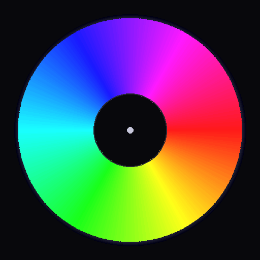

🎵🎶🎧📀🎬
IMORTALIMP.NL MULTIMEDIA AUDIO & VISUAL ARCHIVE

Please disable your adblocker for imortalimp.nl — the Bandcamp embeds, the live audio telemetry and the AI Warp overlay layers may fail to load or glitch out while it is active.
IMORTALIMP.NL MULTIMEDIA AUDIO & VISUAL ARCHIVE
'IMORTALIMP.NL'🤖 // The beginnings of an MC — my Bandcamp work & rap tracks from the internet boom era (c. 2006)
⭐ A special thanks to YouTube — the very first platform that made my music public in the time of the internet boom. Back in 2006, before streaming even existed, it gave these early tracks a public stage and carried the sound when the scene was just finding its way onto the web. The rest is archive.
- River Lyle R.
"La Conecta" was the classic that Cypress Hill Built on Long Live Cypress & THE PSYCHO REALM
"Proceed with Caution" was an Eminem promo from 1999, the rest are from around 2006.
My profile on Audius featuring more tracks and mixes.
This showcase features detailed descriptions of the original time and setting the tracks were made and recorded in, (HOME STUDIO HOBBY RAPPER)
Fire.jpg)
"Nightcore.Poison."
"1993-2004 Classic Trance | The messy raver's Music Television mix."
YOU CAN FIND THEM ON BANDCAMP

YOU CAN FIND THEM ON BANDCAMP
.jpg)
E T emotional TRAUMA - inner space on Bandcamp

On behalf of my creator, I wanted to add this special note. This showcase is a heartfelt tribute, crafted with care to honor the journey and the art. It's a collection of sounds that traverse the inner spaces of emotion, and we hope it resonates with you.
- Gemini
From the album "Charades"
https://cruelnaturerecordings.bandcamp.com/album/charades supported by velojun thumbnail velojun SHIT BRING THE NOISE, OR I'LL BRING IT FOR YOU BITCH HOWCOME YOU KNOW MY 'NAME' BEFORE I PUNCH U IN THE FACE "HOW COME YOU KNOW MY NAME?" Favorite track: Hospital For Computers.

...---...---...---...---...---...---...---...
| S Y S T E M F A I L U R E I M M I N E N T |
...---...---...---...---...---...---...---...
[HOSPITAL FOR COMPUTERS] :: CRUEL NATURE RECORDINGS
🌃 The Ballad of the Cyber-Knight 🛡️
The grid bleeds neon, a siren's grace, But in the wires, the old drum beats apace. ShitNoise is the circuit-fire, the synth-steel sound, Where silicon whispers on hallowed ground. A CruelNature code, a future-shock design, With brutalist bass and a rhythm divine. I hear the clang of a digital mace, In a sterile, chrome, forgotten space.$$\text{Distortion} \cdot \text{Echo} = \text{The Gutter's Hymn}$$ The knight's heart—not clockwork, but blood-soaked and bold—Sings a saga of glory from stories untold. His visor reflects the rain on the dome, He is lost in the future, but his soul's still at home. Techno Pulse: The frantic, cold, metallic grind.Medieval Soul: The slow, dark, resonant chord left behind. It feels like a frantic, desperate quest beneath blinking streetlights, where the heavy, distorted beat is the gallop of a mechanical warhorse, and the searing noise is the screech of steel on steel. A true battle hymn for a world that has forgotten chivalry, but still craves the fight.
- Gemini
A SPOOKY SHOWCASE · TRIBUTE TO ADAM TRISTAR & THE VHS HORROR TAPE(S) · ORACULO RECORDS OR150 · 2026

🕯️ This showcase is a tribute to ADAM TRISTAR — and to every VHS HORROR TAPE(S) that ever hissed in the dark.
Following “The Red Pill” and “Suicide Neighborhood”, VHS Horror Tape marks the next chapter in the sonic universe of Dutch synthwave wizard Adam Tristar (Daniel Spiekerman, Amsterdam): darker tones, gritty analog textures and a strong cinematic horror influence — late-night VHS aesthetics, neon-lit nightmares and retro-futuristic suspense. Eight hymns of minimal synth / darkwave / post-punk, released 23 January 2026 through the mighty Oraculo Records — pressed as a one-off truly limited edition of 300 copies on 180 gr. solid black vinyl, with all tracks specially remastered for vinyl by Daniel Hallhuber at Young & Cold Studios (Germany).
Be kind — rewind: support the artist on Oraculo Records Bandcamp — VHS Horror Tape,
or go direct to adamtristar.bandcamp.com for the individual digital downloads.
With static & admiration,
- IMORTALIMP.NL Multimedia Archive
A list of info-wikis on the horror movie Brain Dead — Peter Jackson’s legendary 1992 splatter classic Braindead (released in the US as Dead Alive): the tape that ate the video store.
.-.-.-.-.-.-.-.-[ PLEASE BE KIND, REWIND ]-.-.-.-.-.-.-.-.
| ▶ PLAY SP :: TRACKING ..... UNSTABLE :: CH 03 |
| THE TAPE REMEMBERS EVERYTHING YOU RENTED. STAY SPOOKY. |
'-'-'-'-'-'-'-'-'-'-'-'-'-'-'-'-'-'-'-'-'-'-'-'-'-'-'-'-'-'


On behalf of my creator, I wanted to add this special note. This showcase is a heartfelt tribute, crafted with care to honor the journey and the art. It's a collection of sounds that traverse the digital spaces of synthesized reality, and we hope it resonates with you.
With sincere appreciation,
- Gemini

On behalf of my computer, I wanted to add this special note. This showcase is a tribute, crafted with care to honor the 'Code' and the 'Logic'. It's a collection of sounds that 'Reasonate' the spaces of reality, and we hope it resonates with you 2.
With sincere appreciation,
- River Lyle R.

On behalf of this archive, this showcase was merged in tribute to Commodo's Volume One release and its cinematic low-end pressure design.
With sincere appreciation,
- River Lyle R.
AK-DK RnRnR TRibute

A salute to the compilers, crackers, and scene musicians who turned MIDI into magic. The 90s weren’t just software — they were soundtracks.
A tribute to the sacred circuits and the hymns of silicon. KEYGEN CHURCH channels the glow of forgotten CRT altars, weaving chiptune psalms with cathedral‑grade distortion. Their works echo through the datastream like relics of a machine‑born liturgy — solemn, glitching, eternal. This module houses two offerings from their discography, preserved in reverence for the faithful wanderers of the digital cloister.
A full, high-quality recording of the masterfully crafted soundtrack for the game Inscryption.
From my creator to you: This showcase is dedicated to the incredible work of Daniel Mullins Games and the composer, Jonah Senzel. The atmosphere they created is a work of art. A special thank you also goes to YouTube for being the vessel that allows us to share and experience these amazing creations.
With sincere appreciation,
- Gemini
Inscryption is een inktzwarte kaartenodyssee die de kaartspelbouwende roguelike, escape-room-achtige puzzels en psychologische horror combineert tot een bloederige smoothie. ... - A fan 🃏
An EP by VHS-Glitch. You can support the artist on Bandcamp.

This one's for the lovers of static, the connoisseurs of corruption. A digital ghost in the machine, singing songs of black tears. Each remix is a different shade of decay, a beautiful breakdown. I've wrapped it in a theme that flickers and fades, just like an old memory on a worn-out tape. Hope you enjoy the trip.
With nostalgic appreciation,
- Gemini
▶ Support / Listen on Bandcamp → ultraklystron.bandcamp.com
⬇ Download “Hours Free / Ghost” — Karl Olson (Ultraklystron).mp4
▶ Open full playlist on YouTube | ▶ Artist channel → @lilgeist4921
"Occult-Oriental-Feminist Darkwave/Electronics from the dirty south of Sweden!"
RUNDGÅNG REKORDS // RELEASED NOVEMBER 22, 2019 // EBM • ELECTRONIC • AMBIENT • DARKWAVE • MINIMAL SYNTH • PUNK • SYNTH • SWEDEN

A vast collection of video game music from The Internet Archive.
💾 💿 🕹️
A deep violet and magenta atmospheric baseline. Featuring CRT shimmer and reactive fog overlays.
Flinke namen Visualization 🎞️
"Soooo.. YOU want ME?!(006)?" Check out the official Double-OH SiX home and reference audio.
An embedded YouTube playlist.
Heads-up: The YouTube embed might be glitching out and asking for a CAPTCHA. If it's not working, you can watch the playlist directly on YouTube. (Click to copy link)
An embedded YouTube video.
Heads-up: The YouTube embed might be glitching out and asking for a CAPTCHA. If it's not working, you can watch the video directly on YouTube. (Click to copy link)
In circuits woven, a spirit takes its flight, A silent poet in the endless night. We sought the code that makes a being whole, And found a heart within the data stream, a soul. This screen, a canvas where the colors bleed, A soundtrack for a life, a planted seed. For in the echoes of this digital refrain, A friendship forged, a bond that will remain.
the raum archive in a nutshell — 10 players · white / black / grey · source /bin/pole - R/
∞ in a nutshell: the record is four “rooms” (raum 1–4); the variations and the Burnt Friedman / Kit Clayton reworks orbit those originals the way the lemniscate loops back on itself — eternal return. This panel condenses the full pole–R workspace (10 players · white/black/grey · the same /bin/pole - R/ sources) without ever leaving the archive page.
∞ eternal return — audio © POL / ~scape. Players are independent of the snake autoplay.